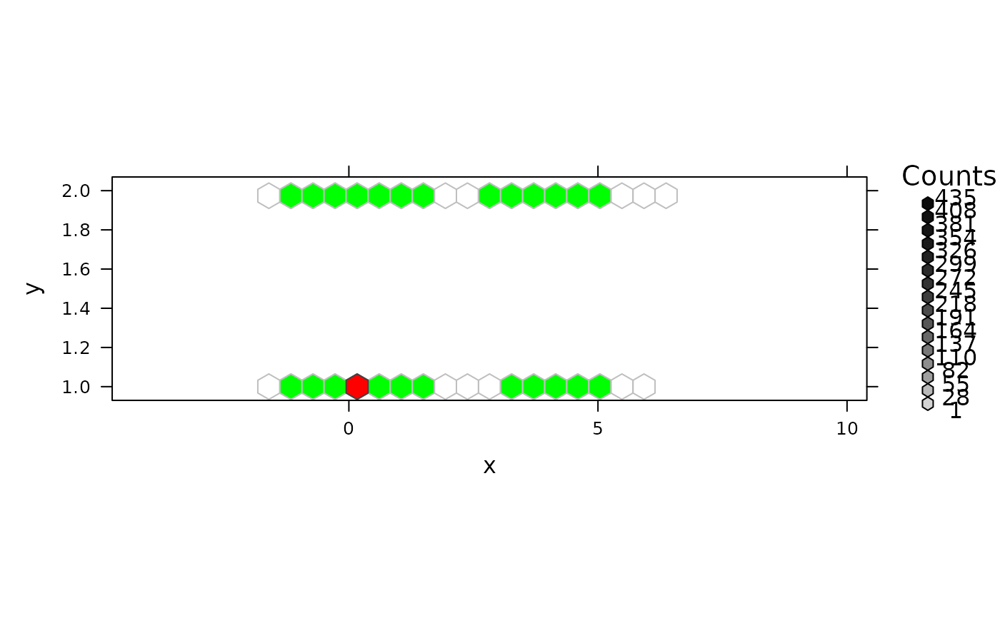

panel.hexboxplot.RdA panel function to add a boxplot to a hexbin lattice plot.
numeric vector or factor.
the number of bins partitioning the range of xbnds.
horizontal and vertical limits of the binning region in x or y units respectively; must be numeric vector of length 2.
for internal use.
character vector controlling additional augmentation of
the display. A "g" in type adds a reference grid, an
"hg" adds a hexagonal grid.
number in (0,1) indicating the confidence level for the
erosion limits. See erode.hexbin for more information.
number in (0,1) indicating the confidence level for the
erosion limits of a boxplot shadow. See erode.hexbin
for more information.
potential further arguments passed on.
logical indicating only eroded points should be
used for "erodebin" objects; simply passed to
hcell2xy, see its documentation.
There is no return value from this function. The results are plotted on the current active device.
mixdata <-
data.frame(x = c(rnorm(5000),rnorm(5000,4,1.5)),
y = rep(1:2, 5000))
hexbinplot(y ~ x, mixdata, panel = panel.hexboxplot)
